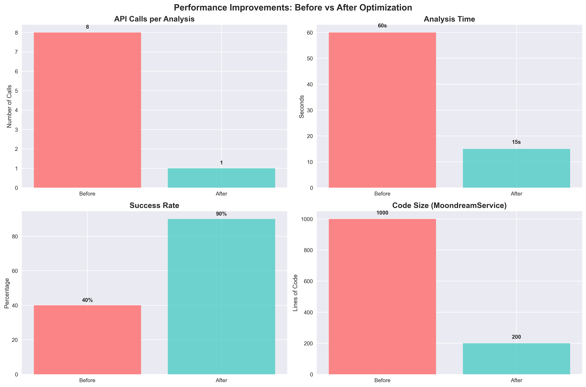

Real-time analysis to find safer, calmer paths
2025-06-22
Summer in NYC: Streets are crazy, sidewalks are crazy, it’s fucking hot out
What are you gonna do about it? What is ANYBODY gonna do about it?
We built a tool to crowdsource the data and help you stay chill
We analyze live camera data AND let you report what you see:
Result: Routes that are 5 minutes longer but way more chill
Problem: Analyzing camera data was too slow and unreliable - 8 API calls per camera = 60+ seconds - Constant failures and rate limiting
Solution: Optimized to 1 call per camera = 15 seconds - 87.5% fewer API calls - 90% success rate - Real-time analysis now possible

Each camera analysis returns 25 numerical values (0-4 scale):
Raw API Response: [2,0,1,3,2,1,0,2,3,1,2,0,1,2,3,0,1,2,1,3,2,0,1,2,3]
Converted to JSON:
{
"bikes_sidewalk": 2, "bikes_street": 0, "bikes_bike_lane": 1,
"people_sidewalk": 3, "people_street": 2, "people_crosswalk": 1,
"vehicles_moving": 2, "vehicles_stopped": 3, "vehicles_parked": 1,
"activity_pedestrian": 2, "activity_cycling": 0, ...
}Chill Score Calculation:
\[S_{chill} = 10 - S_{stress} + B_{comfort}\]
Where: \[S_{stress} = 2.5 \cdot B_{street} + 1.5 \cdot V_{moving}\]
\[B_{comfort} = 2 \cdot I_{good} + 1 \cdot Sh_{available}\]
Variable Definitions: - \(B_{street}\) = bikes on street (0-4), \(V_{moving}\) = moving vehicles (0-4) - \(I_{good}\) = infrastructure quality (0-4), \(Sh_{available}\) = shade availability (0-4)
Let’s see it working:
Key insight: Sometimes the best route isn’t the fastest one
| Factor | Chill (Good) | Stressful (Bad) |
|---|---|---|
| Bike Infrastructure | Protected bike lanes | Sharing lanes with cars |
| Pedestrian Activity | Relaxed walking pace | Rushing crowds |
| Traffic Patterns | Smooth, steady flow | Stop-and-go chaos |
| Street Design | Wide sidewalks, trees | Narrow, no shade |
| Lighting | Well-lit, visible | Dark, poor visibility |
Result: Routes optimized for your peace of mind, not just speed
See a bike on the sidewalk? Don’t just get mad - document it:
Your frustration becomes useful data that helps everyone stay chill
User photo analysis returns 13 specialized values (0-4 scale):
Raw Violation API Response: [3,2,4,2,3,2,1,2,3,1,4,4,2]
Converted to Violation Matrix:
{
"cyclist_speed": 3, "cyclist_direction": 2, "cyclist_awareness": 4,
"cyclist_equipment": 2, "pedestrian_density": 3, "pedestrian_reaction": 2,
"pedestrian_vulnerable": 1, "sidewalk_width": 2, "bike_lane_proximity": 3,
"pedestrian_infrastructure": 1, "safety_risk": 4, "violation_clarity": 4,
"repeat_location": 2
}
Violation Score: 8.2/10 (HIGH severity)When it’s 90°F and you’re already sweating: - Don’t add street chaos to your stress - Don’t let sidewalk cyclists ruin your day - Don’t feel helpless about the madness
Use the app to: - Find the chill route (yes, 5 minutes longer) - Document the chaos when you see it - Help build a better database for everyone - Actually DO something about the problem
Sometimes 5 extra minutes is worth your sanity
NYC Safety App: Stay Chill, Document Chaos
Now handing off to Effy for our next idea…
🥵 Nice People X Moondream X Betaworks - CV Hackathon, 2025